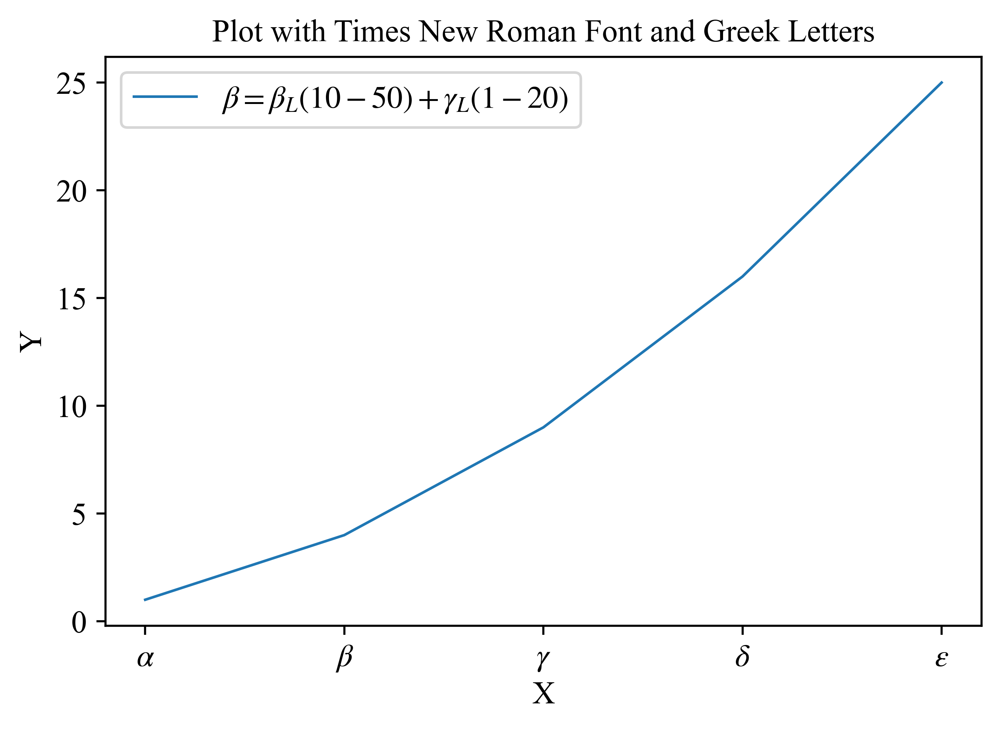
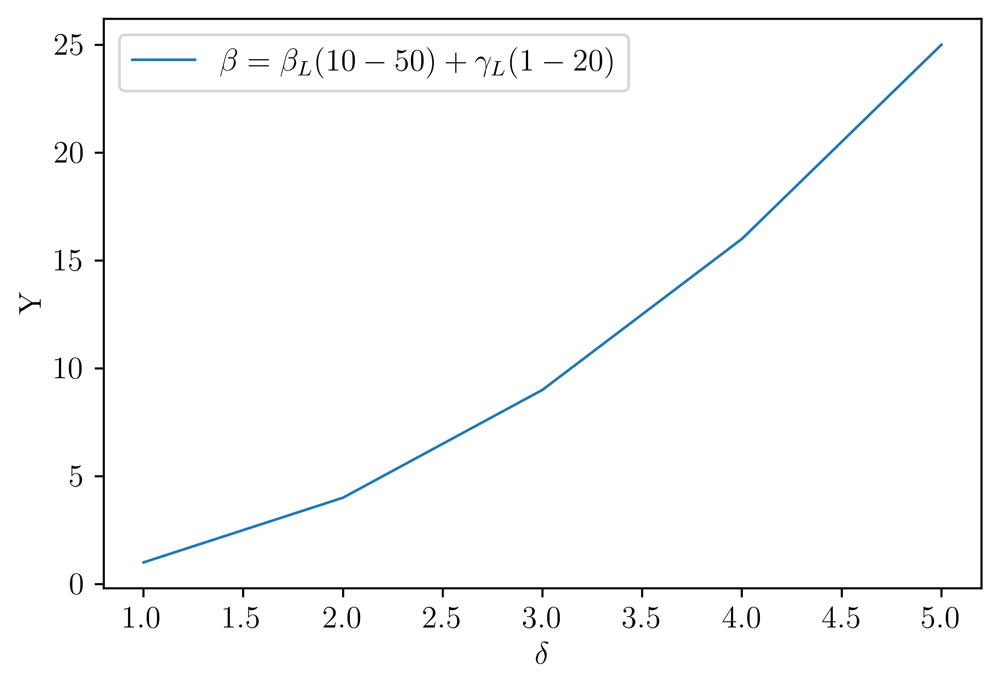

Matplotlib 使用latex渲染公式¶
直接使用times new roman字体，注意要将其中数学公式部分换成另一个和times很像的字体(stix)！！! 否则写出来的公式会默认加粗 感谢吴佳昕提供的建议
import matplotlib.pyplot as plt
import matplotlib as mpl
# 设置字体为 Times New Roman
# plt.rcParams['font.family'] = 'Times New Roman'
mpl.rcParams['text.usetex'] = False
plt.rc('font',family='Times New Roman')
plt.rcParams['mathtext.fontset'] = 'stix'
font={'family': 'Times New Roman', 'math_fontfamily':'stix'}
# 创建示例数据
x = [1, 2, 3, 4, 5]
y = [1, 4, 9, 16, 25]
fig, ax = plt.subplots()
# 绘制图形
plt.plot(x, y,label=r'$\beta = \beta_L(10-50)+\gamma_L(1-20)$')
plt.xlabel('X')
plt.ylabel('Y')
plt.legend()
plt.title('Plot with Times New Roman Font and Greek Letters')
# 设置 x 轴刻度标签为希腊字母
plt.xticks(x, [r'$\alpha$', r'$\beta$', r'$\gamma$', r'$\delta$', r'$\epsilon$'])
fig.savefig("test2.png", bbox_inches='tight', dpi=500)
fig.savefig("test2.pdf", bbox_inches='tight')
fig.savefig("test2.svg", bbox_inches='tight')
plt.show()

采用Latex 渲染器渲染，直接导出svg字体会变细（又是奇怪的bug），需要导出PDF后然后转成SVG(如果需要的话)，然而即便是这样，渲染过后的字体也和times不完全一样，可以看坐标轴数字5（奇怪的bug+1）
import matplotlib.pyplot as plt
import matplotlib.pylab as pylab
import matplotlib as mpl
params = {
'font.size': '12',
'axes.titlesize': '12',
'axes.labelsize': '12',
'xtick.labelsize': '12',
'ytick.labelsize': '12',
'lines.linewidth': '1',
'legend.fontsize': '12',
'axes.labelpad': '3.0',
'figure.figsize': '6, 4',
'font.family':"Times New Roman",
}
pylab.rcParams.update(params)
# 设置使用 LaTeX 渲染
mpl.rcParams['text.usetex'] = True
# mpl.rcParams['text.latex.preamble'] = r'\usepackage{amsmath}'
# # 设置字体为 Times New Roman
# mpl.rcParams['font.family'] = 'Times New Roman'
# 创建示例数据
x = [1, 2, 3, 4, 5]
y = [1, 4, 9, 16, 25]
fig, ax = plt.subplots()
# 绘制图形
plt.plot(x, y,label=r'$\beta = \beta_L(10-50)+\gamma_L(1-20)$')
plt.xlabel(r'$\delta$')
plt.ylabel(r'Y')
# plt.title('stix')
plt.legend()
plt.show()
fig.savefig("test2.png", bbox_inches='tight', dpi=500)
fig.savefig("test2.pdf", bbox_inches='tight')
fig.savefig("test2.svg", bbox_inches='tight')
plt.show()

pdf 2 svg https://www.i2pdf.com/cn/pdf-to-svg